先叠一个buff：本文内容涉及进食障碍、性向探索、原生家庭、婚恋与丁克、女性主义和极简主义，不感兴趣的就不必看了，我的写作是为了女人，不会讨好男人，也不会在意男人想什么。本文也是自身经历的回顾，我不会给出具体的医疗建议，但如果你也在经历同样的事情，我希望能带给你一点点启发，不必重走我的老路。
首先贴一下我最重和最轻的时候：
左边145+斤，右边100斤很震撼吧，看起来好像是一个励志的故事：一个来自三线小城市的胖女孩，考上985，减肥45斤，学会化妆，变身美女。接下来应该是找到完美男友和完美工作，结婚生子，幸福美满。
可惜现实不是爽文。
最最开始的时候，我从145斤减到110斤，只花了5个月。但是随后的十年，我90%的时间里都无法享受食物：我知道我喜欢花生、芝士、炸鸡、烤华夫饼、炸红薯片，但我也知道一旦吃了我就会停不下来，要吃到撑才会满足，可是吃完了我又开始担心我会不会变肥；变胖的焦虑又让我转向食物，企图获得一点平静。。恶性循环，日日不息。
下图是我这十年来控制体重的历程，空白的部分并不是体重稳定了，而是：每胖到6斤我就会少吃一段时间，等体重回落；每天冬天会胖到120，夏天则会在100~110之间波动。
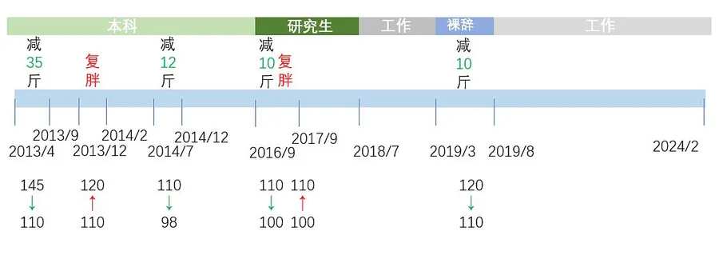
其实这十年来我长高了3.5厘米，所以，以我168的净身高，即使130斤也是一个非常健康的数字，但是这十年中，如果我体重达到了120，我就会开始减肥。
我真的很害怕再变成一个胖子。
我记得小学时候，因为超重，被来选合唱队队员的男老师当面说你太胖了；我记得初中时候，一进商店，就会被售货员上下打量，然后说我们这里没你的码；我记得高中时候，跟爸爸一起带着弟弟买菜，被卖菜阿姨问：这是你老婆吗？
也许是幸运，我家里人从没觉得我胖，我也没因为胖受过同学的霸凌或者老师的歧视，更重要的是，我在19岁之前，没想过要变美，也没想过谈恋爱。我没有性别意识，我和男孩、女孩都是好朋友，更不知道喜欢、爱是什么，有什么区别。我就是一个无性别的、天然的书呆子，每天只想着读文学和考北大。
等我进入大学，19岁的春天，周围的人陆续开始谈恋爱。我身在遥远的南方，忽然很好奇什么是爱？为什么两个人会在一起？为什么他们会形影不离？为什么他们会思念，会哭泣？
在那之前，我的读物是推理小说、自然科学和文学名著。我对性不感兴趣，因为当时读过了蔡东藩和高阳，觉得历史上那些恩爱情侣不过是为了欲望和权力纠缠；而推理小说更是告诉我：奸情人命：）。但是一旦好奇起来，我就开始读言情小说，试图去理解爱情是如何发生的。我还去知乎搜了很多有关两性心理的回答，比如如何“勾引”男人，也读了关于PUA、操纵的书籍。
与此同时，我决定给自己找个实践对象。没错，那个对象只满足3个条件：我认识、男的、对我还可以。我并不喜欢他，我只是想体验一下恋爱。
既然要实践，我就应该把自己打造成一个美女。于是接下来的5个月，我利用游泳课的机会学会了游泳，每天风雨无阻游2h，平时不吃辛辣肥腻，并且把每餐的米饭直接去掉了一半。
效果很显著，9月开学的时候我已经很苗条了，所有人都说我瘦了好多。
于是我鼓起勇气跟实践对象表白了，结果被发了好人卡。
随后我开始准备第二年的出国交换，因为恋爱失败和学业焦虑，再加上寒假时候家里人一直说我太瘦太瘦，使劲给我补，导致我13年冬天又胖到120。
14年夏天我独自一人去了南亚某国做交换生。
因为个性内向，口语也不太好，加上一直不喜欢自己的专业，所以这半年的时间，我一直在逃课。上课时间不是在图书馆看书，就是去室外徒步。有时候焦虑自己的学分，就会熬夜到很晚。当时我很爱看一档节目：supersize vs superskinny。
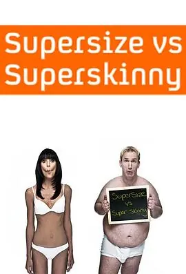
超大号与超小号 第一季 (2008)7.62008 / 英国 / 纪录片 / Christian Jessen Anna Richardson有好几季，我在油管看了很久我竟然觉得里面皮包骨的身材很好看。
所以我又开始控制饮食（饭吃很少），并且会在失眠的次日，去游泳池游上一个小时再回宿舍睡觉。（不要这么做，对心脏很不好的，我那时候也会偶尔心慌）
我在那里失掉了月经。但是我不在意。因为我也不想生小孩。
我在那里是一个孤岛，我很少跟家里、朋友、同学交流，我很怕他们知道我过得并不好，我也不想承认，我心心念念申请的国外交换，竟然是这样一个状态。我逃避着社交，也是逃避着自己的心。
厌食的日子里，我一天可能只能吃一餐，一般就是一份沙拉，然后喝很多黑咖啡或者乌龙茶。
而在暴食的日子里，我一顿可以干吃掉一大袋milo（一种很甜的巧克力冲饮粉末，一大袋可能有20几小袋），再吃掉很多薯片、热华夫饼（要刷很多花生酱和巧克力酱），最后再吃一份炸鸡，很多冰淇淋。我现在已经回忆不起这些食物的味道了，当时的进食也不是享受，仿佛我吃下去就会心安，我吃下去，就可以什么都不想，陷入梦乡。
我一般会吃到咽不下去，肚子硬硬的，胸口发闷，同时心跳特别快，躺下会出汗、睡不着，一直到这种程度才会停止。
但是暴食的结果是被噩梦缠绕（睡前摄入太多碳水、糖类会引发噩梦，有文献支持），而且第二天我会开始后悔，担心昨天吃的热量变成脂肪。我会变回140斤吗？如果我没吃那么多就好了。
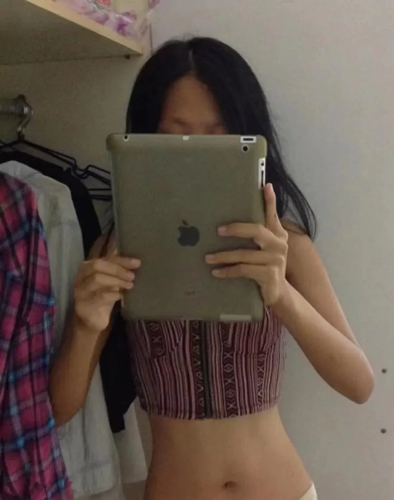
当时的我，98斤上下几年后我才知道，进食障碍（eating disorder）是一种年轻女性高发的疾病。很多患者跟我一样，厌食和暴食是会交替发生。而厌食除了刻意减少进食量外，还会有过度运动的倾向（就像我当时动不动跑步10公里，或者游泳1h后又跑步半小时）。患有ed的人更是各种身材都有，女性比男性更高发。
然而当时的我并没有意识到自己出了问题，我只觉得我的身材变好了，我虽然搞砸了我的学业，但是我还是一个健康的、自律的人，因为我的身材保持得很好呀。我好像在一片迷茫中漂浮，而我干瘦的身材，是一个锚点，证明我还在向正确的方向前进。
等我结束交换，回国后，我去看了妇科。我记得那个女医生跟我说，你没问题，只是太瘦了，要多吃点饭，不要让父母担心啊。医生给我开了雌激素，我开始正常吃饭、控制着自己不要多吃。
我的月经回来了。我天真地以为一切恢复正常了。
那之后的两年我忙于学业，也在思考是否要就业，同时开始跟男孩们约会。
我开始网恋，面基，在各种男孩身上实践我学到的两性知识，但是止步于接吻。我对亲吻、性，仍然没有兴趣。或者说，对跟这些男孩亲吻没有兴趣。
与此同时，我开始接触关于同性的电影和书籍。东野圭吾的一本书一下子击中了我，我开始怀疑自己是不是双性恋。
单恋7.6[日] 东野圭吾 / 2016 / 南海出版公司这本探讨了性向流动说但是我还是开启了我的初恋：我找了一个隔壁学校的男朋友。
同时，因为我开始跟父母就性取向、相亲、职业选择、是否返乡等一系列问题吵架，我开始阅读关于原生家庭和亲子关系的书，同时开始对所谓的“孝道”产生疑惑，并且十分不认同我妈希望把我培养成“贤妻”的一系列做法。
好像就是从那时候开始，我不再把书作为唯一的伙伴，我开始跟很多人社交，尝试去理解社会中的人，并且通过跟男朋友的聊天，进一步认识我自己。
但是这带来了更多的疑惑。
我不明白自己为什么抗拒跟男朋友亲吻，明明他很温柔，对我很好，我跟他待在一起也很放松；我不明白为什么他会一直想和我待在一起，而我需要空间独处，更不懂他说的思念；我也不明白为什么我妈不喜欢我的男朋友，认为他学历低，明明也是一本啊；我也不明白为什么我爸说我打算丁克是大逆不道、违反自然规律。
太奇怪了。
这些失控的时刻让我转向食物寻找安慰。
那两年我沉迷甜点，我可以一次吃掉两个小臂长的、灌满奶油的毛毛虫面包，也可以一次吃掉4个可爱多（一种底部是巧克力的冰淇淋）。吃甜的会让我舒服一点，但是吃完我还是会担心发胖。好在那时候我体力非常好，经常跑10公里。
最后我选择了保研，并且认识了我第一个真正喜欢的男孩。
然后我第一次体会到所谓的“女为悦己者容”。我又开始减肥，这次减肥后我开始学习化妆。所以2016年10月，我来到了另一个体重低点。
当时我陷入了长达3个月的厌食期。那段时间我每天只能吃1~2顿饭，有时候不吃午饭就出去逛街，整整一下午到睡觉，我可能只能吃一包25g的柠檬片，还是低糖的。
我吃不下东西。每一口食物，我都能感受到它们在我的喉咙、食管滑动，我觉得很恶心，但是要维持正常生理功能，我就必须吃。每天吃最低限度的食物，想尽办法跟我喜欢的人在一起，聊天，吃饭。
但是，非常好笑的是，他是gay。
我知道这件事的时候我已经不再喜欢他了。因为我们虽然还在一起上课、吃饭，但是我的耐心已经到头了。折腾了半年，喜欢他已经变成一件太辛苦的事情了。我还记得那是某天课间，他起身帮我拉窗帘，我看他的背影，好像忽然失去了光芒。那时候我就知道，我们俩，这辈子，最多最多只能是好朋友了。（现在也的确是）
那之后我觉得减肥毫无意义，同时焦虑于没有写出论文，所以我又开始暴食，并且很快吃到了120斤。
后来他也跟我出柜了，我只觉得好笑：你为什么不早说呀？
毕业后我换了城市，但是很不幸，那份工作带着很强的PUA色彩。
我在读书的时候就不喜欢自己的专业，第一份工作又做得不够好。我的领导经常觉得我做的数据不好，也经常暗示我加班、主动上课。但是我真的做不到，每天只是熬到下班就耗费了我全部精力了，回到家里我只想躺着，什么都不做。
那段时间我还犯了荨麻诊。时不时发烧。
当时我认识第一任女朋友，很不幸，她需要很多很多的情感支持。所以我一边从心理上支持她，一边接受她的push，准备搬回大学所在的城市。
为了疏解她给我带来的压力，我同时还在date两个男的。
挺烂的是吧，我现在也觉得是。
那段时间我开始接触女性主义相关话题，但是更多像擦亮眼派。那时候我还在服“美”役，会烫头发到半夜，会拍性感照片，会学化妆，整天打扮地漂漂亮亮地像个娃娃。
结果就是女朋友把我甩了，我和其中一个男的在一起了。
我受不了工作，裸辞了，当时我又涨到120斤了。
裸辞后我搬了家，开开心心地吃存款5个月，结果快到山穷水尽的时候回家求助，我爸第二天就暗示我快点回去找工作。我当时觉得所谓父母之爱子，也不过是嘴上说说罢了。
当时的男友说可以住到他那里去，但是我拒绝了，我没想好要不要结婚。
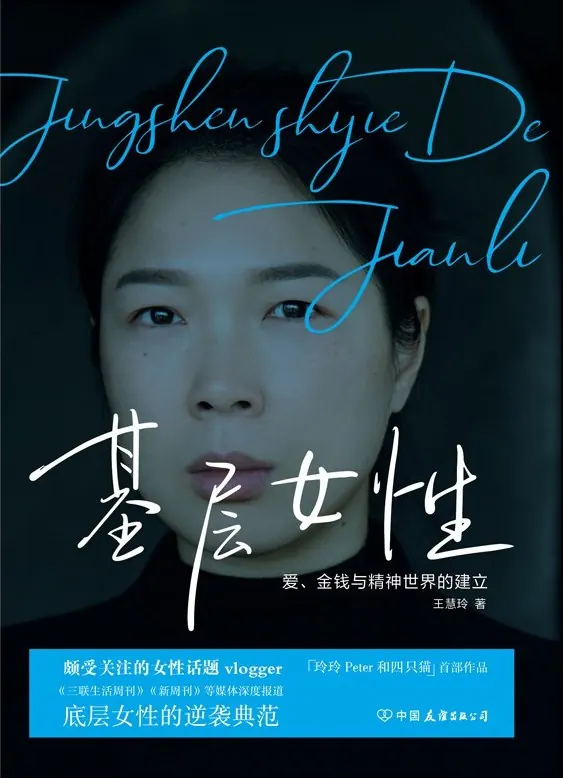
基层女性7.5王慧玲 / 2021 / 中国友谊出版公司如果一定要擦亮眼，我是建议读这本的，有用20年，疫情开始，当时的男友开始求婚，我也开始思考婚姻、家庭相关的问题。有几本书带给我一些启发，但是也没有完全解惑：
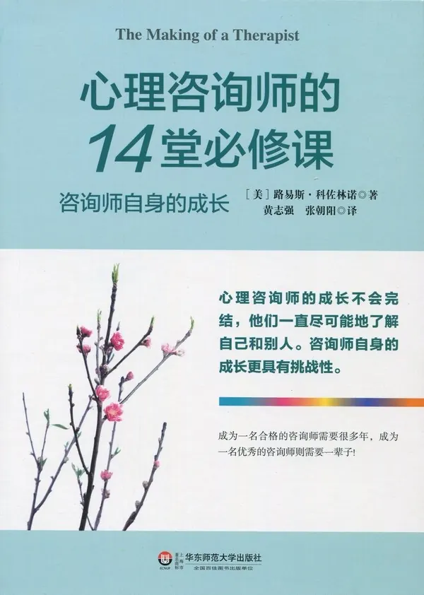
心理咨询师的14堂必修课9.0[美]路易斯·科佐林诺 / 2012 / 华东师范大学出版社我一度想训练自己做自己的心理咨询师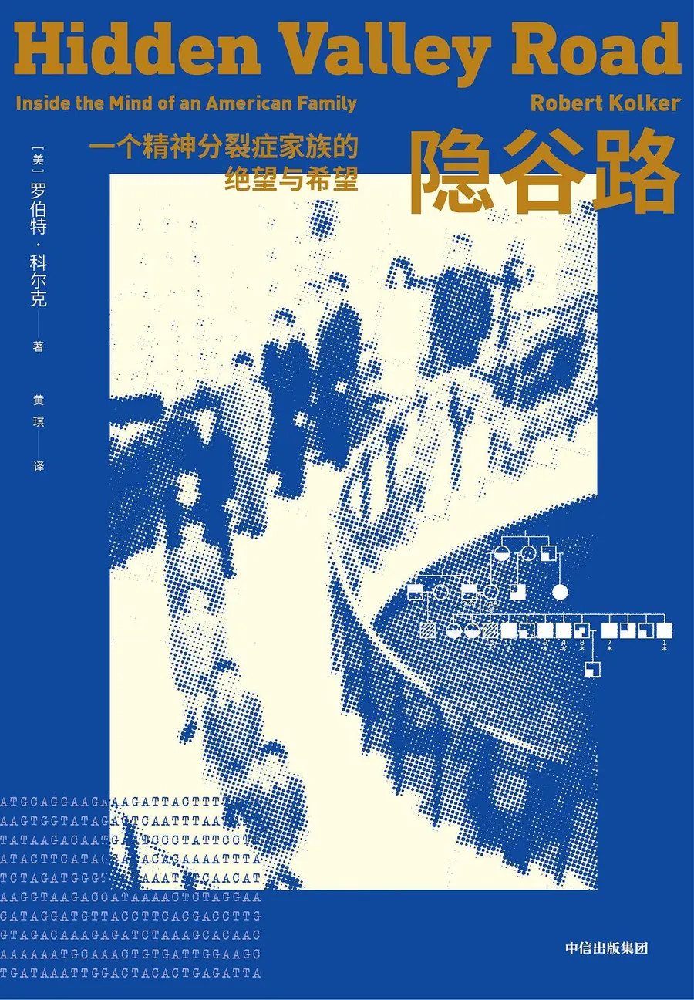
隐谷路9.1[美]罗伯特·科尔克 / 2021 / 中信出版集团让我开始以家庭为整体思考我和爸妈性格的差异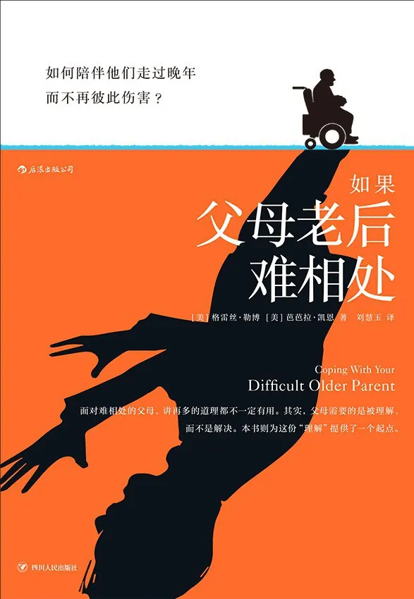
如果父母老后难相处7.7[美] 格雷丝·勒博 [美] 芭芭拉·凯恩 Grace Lebow Barbara Kane / 2020 / 四川人民出版社学习与父母的相处之道同时我也开始反思我父母是否在pua我，以及我是否在pua以往的伴侣：
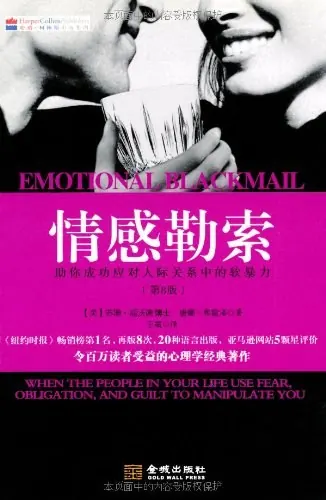
情感勒索8.2[美] 苏珊·福沃德 唐娜·弗雷泽 / 2010 / 金城出版社主要是我爸妈对我像这个，但他们可能没有意识到如何识破男人的谎言8.2[美]苏珊·福沃德 [美]唐娜·弗雷泽 / 2015 / 金城出版社其实当时读了很多书，只是这几本我印象比较深刻。但是还是有很多问题没有解释，比如，为什么女性一定要结婚？如果不结婚，不做谁的妻子，能不能“顺利”地活下去？
于是我开始接触女性主义。
当时上野千鹤子的中译本已经开始流行，不过我并不是从《父权制与资本主义》开始的。
那时候的我，满脑子还是平权啦，男女平等啦，搞什么女权。但是等我读到《始于极限》，我忽然觉得原来她早就说过了。除了她的书，我印象深刻的还有：
好女孩上天堂 “坏”女孩走四方7.7[德] 乌特•艾尔哈特 / 2014 / 华夏出版社擦亮眼派也可以在里面找到共鸣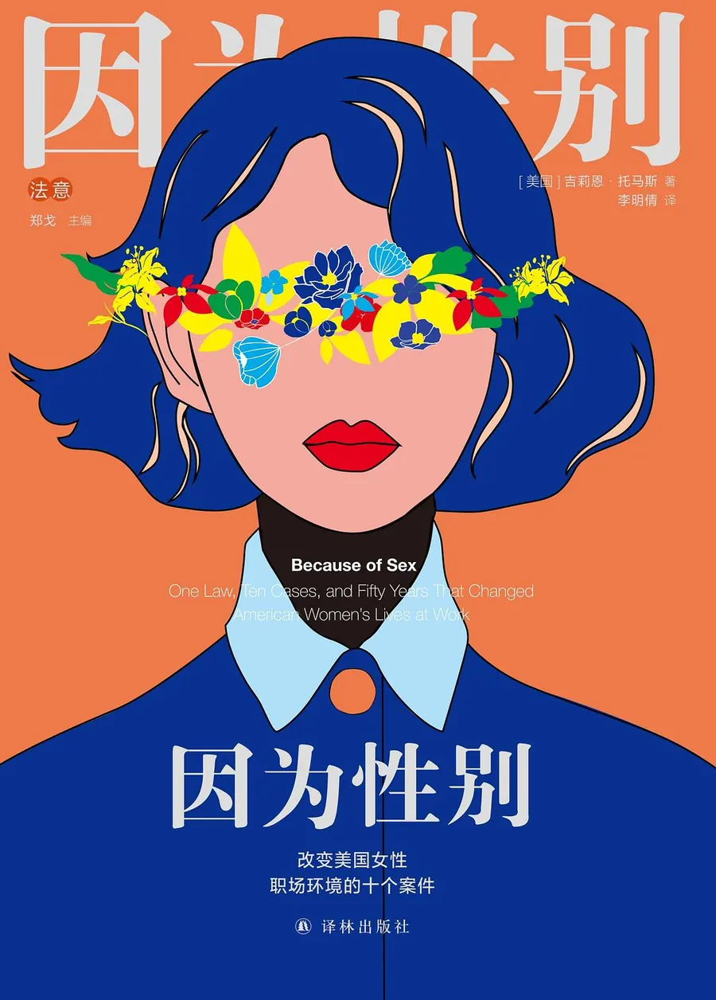
因为性别8.2[美]吉莉恩·托马斯 / 2019 / 译林出版社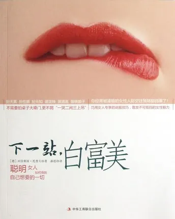
下一站白富美8.3[德]珂奈利亚·托普夫 / 2013 / 中华工商联合出版社题目挺烂的，内容好的与此同时，我开始阅读一些法律案例。印象深刻的有法院出的关于婚姻和家庭的案例。通过例子，我对婚姻已经没什么期望了。与此同时，我觉得我的男友，他在面对我和他家庭之间的矛盾时，他也是非常软弱的“妈宝”，至此，我提出了分手。
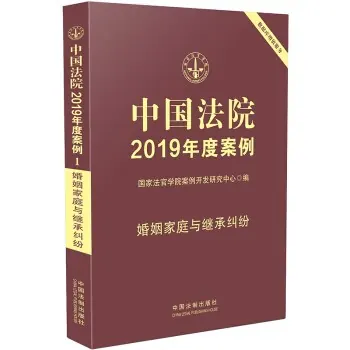
中国法院2019年度案例·婚姻家庭与继承纠纷8.6中国法制出版社有点过时，但是当时是很新的但是分手后我还是继续谈恋爱，有男的，也有女的，但是对男性越来越失望。
我现在就是偏lesbian的无性恋？也可能就寡着吧。有心动的会去谈，没有就洁身自好。
19年下半年我找到了新工作，并且一直工作至今。虽然现在也经常不想干了，也会骂老板，但是我很清楚，我的工作帮我建立了对编程的兴趣。我不再抗拒我的职业了。
但是我仍旧在与食欲奋斗，只不过暴食的频率降低到几个月一次了。
我仍然很害怕我变胖，会默默地在心里计算热量，经常称体重，并且对那增长的1公斤诚惶诚恐。
我害怕失去我能控制的东西——体重。我还是把体重跟自律挂钩。
难道我要跟食欲和体重斗争一辈子吗？我要一辈子节食，一辈子担心变胖吗？
一切的转机在2022年8月，我开始接触极简主义。（这里不会展开极简，想看的可以看我的极简修行豆列）
透过极简，我开始把我的注意力放在我最需要关注的事情上。终于在去年下半年，我开始意识到，体重不是我最需要关注的事情。我最需要关注的，是存钱、是学语言、是上前置课程，取得证书。
同时，通过一些阅读，我意识到我的暴食源自于我对自身情绪长久的忽略。
我身边的朋友、同事，总是评价我是情绪稳定的人，但是我清楚自己只是习惯于压抑情绪，并且在压抑不住的时候疯狂内耗。我会向朋友们剖析我失控的原因，但是因为自尊心，往往只是最表层的原因，何况进食障碍这件事，我只向一位男友和一位好朋友提到过！！而且是轻轻带过的！！他们并不知道我严重到何等程度，不知道我的ed不是一段时间，而是持续了十年，反复发作。
而我，习惯了用不进食或者过度运动去控制体型，从而获得对生活的掌控感和自信心；也习惯了用食物来宽慰我的孤独、失望、自卑、愤怒，并且用暴食之后无法思考的混沌去逃避现实问题。我习惯了这些，从没意识到这些是不对的，我是在饮鸩止渴。
吃货的50种情绪减肥法7.2（美）苏珊•阿尔伯斯（Susan Albers） / 2014 / 机械工业出版社有很多建议，如果只推荐一本，我推荐这个这本书帮我重新建立了食物、食欲和情绪之间的关系。让我知道了，如果情绪来了，就去尊重它，拥抱它，就像老朋友。不管是多么负面的情绪，它们终究会离开的，而你只要站在那里，等情绪的潮水退下，就可以了。
几年前看老友记，我曾经把Food is not love截图下来，做壁纸，提醒自己不要暴食，但是直到去年，我才知道明白这句话的真正含义：食物是滋养身体的，它能让你开心一会儿，但是解决不了许许多多的现实问题，那不是它的使命。解决问题，唯有诚实面对，一点点去做。
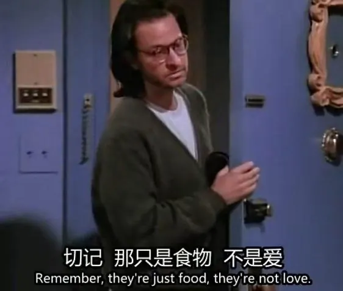
虽然题目中的问题，解法是在最后一本书，但我觉得，它是吃饱之前的最后一个馒头。没有前面的经历、阅读、思考，可能我就是吃不饱的。
现在的我已经不称体重了，虽然为了锻炼腿部肌肉，还是会定期运动，但是偶尔吃个夜宵，偶尔偷懒不练，我已经不会愧疚了。我也不节食了，每次吃到满足就好，整个春节期间我也没有涨一斤体重（我爸妈还在减肥，所以家里有秤）。当然，我也再也没有厌食或者暴饮暴食。
前段时间贾玲减肥成功，很多人担心她会反弹。其实就我的经历来说，虽然我有进食障碍，但是十年来确实没有超过120，更没有反弹回原始体重。所以我觉得贾玲也不会，其他想减肥的人也不会，唯一令我担心的就是，有人走了我的老路。
如果你也受进食障碍的困扰，我建议你去就医。进食障碍是一个需要精神科和营养科共同干预的问题，同时需要来自家庭和朋友的支持与帮助。讳疾忌医的人应该很多，如果给我一个穿越回去的机会，我会在14年或者15年就去就医，而不是白白地浪费时间，等自己想通。虽然17年我就开始向朋友分享我的问题，但是当时我说的浅，对方也没有相应的知识储备，所以除了监督我吃饭，并没有太好的解决方案。不过那也是有帮助的。
最后，祝读到这里的人幸福、平安。